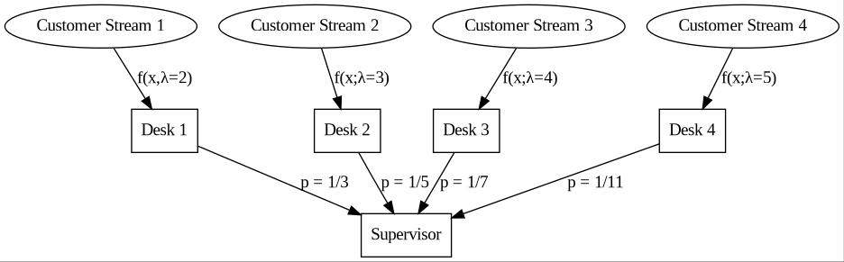
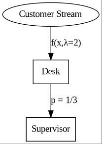

"Simple" Distribution Sum
TODO This blog post is a work in progress, and contains mistakes.
A Simple Distribution Question
A friend of mine recently completed some aptitude tests for a company they were applying to. Following their experience, they asked me if I could solve the question.
The Question
There are 4 desks accepting customers. The amount of time between each customer arriving at the desk follows exponential distributions; with \(\lambda = 2, 3, 4, 5\) respectively. All 4 desks have a supervisor, and will pass on an individual customer with probabilities \({1 \over 3}, {1 \over 5}, {1 \over 7}, {1 \over 11}\) respectively. What is the expected time between customers arriving at the supervisor?

Figure 1: problem illustration, 4 streams of customers, each with their own desk to intercept and reject with a probability, summing to the manager.
Some Contextual Information
an exponential distribution is has pdf \(f\left(x \middle| \lambda\right) = \lambda e^{-\lambda x}\), and has a mean of \({1 \over \lambda}\).
Initial Attempts
At its face, this looks like it has a simple solution! simply multiply the expectations by the probabilities and sum the results:
\begin{align*} &\frac{1}{3} \frac{1}{2}+\frac{1}{5} \frac{1}{3}+\frac{1}{7} \frac{1}{4}+\frac{1}{11} \frac{1}{5}\\ =& \frac{1}{6} + \frac{1}{15} + \frac{1}{28} + \frac{1}{55}\\ =& \frac{1327}{4620}\\ \approx& 0.2872 \end{align*}This was the answer my friend gave, but it didnt sit quite right with me.
If you only have one desk and one supervisor (figure 2), the amount of time between customers for the supervisor must be larger then the amount of time between customers for the desk, as the number of customers he sees can not exceed the number of customers that arrive at the desk. \(D \le S\) (where \(D\) is the desks incoming customers and \(S\) is the supervisors incoming customers)

Figure 2: single desk sending customers to manager
Using our initial logic, we have \(p D = S\) where \(p\) is the probability that \(D\) passes on a customer. This introduces a contradiction, as \(p \le 1\) meaning that \({S \over p} = D \ge S\). What is wrong here?
The answer is that by multiplying the probability by the expected time between customers, not the expected number of customers. To do the latter, we can convert \(D\) (units time / customer) to \({1 \over D}\) (units customer / time). We then multiply this quantity by the probability of passing on the customer and convert back to time / customer. This leaves us with \({D \over p}\). This follows the intuition we laid out above.
The Second Problem
Taking the step outlined above requires us to sum customers per time before inverting. We are left with the following formula for the problem
\begin{equation*} E\left[{1 \over \sum\limits_{i=1}^{4} {p_i \over \lambda_i}}\right] = \int\limits_{\Omega} { 1 \over \sum\limits_{i=1}^{4}{p_i \over x_i} } p\left(\bigcup\limits_{i=1}^{4}x_i\right)\prod_{i=1}^{4}\delta x_i = \iiiint_{\Omega} {1 \over {p_1 \over x_1}+{p_2 \over x_2}+{p_3 \over x_3}+{p_4 \over x_4}} p\left(x_1\right) p\left(x_2\right) p\left(x_3\right) p\left(x_4\right)^* \delta x_1 \delta x_2 \delta x_3 \delta x_4 \end{equation*}\(^*\) - as \(x_i\) are independent
which has no easy solution.
The missing information and solution
It turns out that this is a class of problem known as poisson processes, and they have a simple property. Adding multiple poisson processes results in another poisson process with \(\lambda_\Sigma = \lambda_1 + \lambda_2\).
TODO Proof
Now, the solution is much easier! we can transform \(\lambda_i\) directly with \(p_i\) (\(\lambda_i\) represents the customers / time) and sum them to get \(\lambda_\Sigma\):
\begin{equation*} \lambda_\Sigma = p_1\lambda_1 + p_2\lambda_2 + p_3\lambda_3 + p_4\lambda_4 \end{equation*}meaning that \(E\left[S\right] = {1 \over \lambda_\Sigma} = {1 \over {p_1\lambda_1 + p_2\lambda_2 + p_3\lambda_3 + p_4\lambda_4}}\) Plugging in the numbers gives us an answer of \(\frac{2648}{1155} \approx 2.2926\).
Checking with a simulation
import numpy as np np.set_printoptions(precision=2) simulation_count = 1000000 lambdas = np.array([2, 3, 4, 5]) probabilities = 1 / np.array([3, 5, 7, 11]) # draw from exponential distribution for all desks gaps = np.random.exponential(lambdas, (simulation_count, len(lambdas))) # turn into timestamps times = np.cumsum(gaps, axis=0) # draw from each column according to distribution pass_on = np.random.uniform(size=times.shape) < probabilities # sanity check - are the correct probabilites demonstrated and the correct # lambdas? print('simulated probabilities:', p_e:= np.mean(pass_on, axis=0), 'expected:', probabilities, '\ndiff:', p_e - probabilities, end='\n\n') print('simultated lambdas:', l_e := np.mean(gaps, axis=0), 'expected:', lambdas, '\ndiff:', l_e - lambdas, end='\n\n') # concatenate arrays and remove unwanted supervisor = np.sort(np.concatenate(times)[np.concatenate(pass_on)]) # remove any past the last entry of the shortest simulation (to ensure all # streams run for the same amount of time) supervisor = supervisor[supervisor < np.min(times[-1,:])] # print the final estimate print('the mean time between customers for the supervisor was', np.diff(supervisor).mean())
simulated probabilities: [0.33 0.2 0.14 0.09] expected: [0.33 0.2 0.14 0.09] diff: [-1.03e-05 -2.06e-04 -4.30e-04 -2.28e-04] simultated lambdas: [2. 3. 4. 5.] expected: [2 3 4 5] diff: [-0. -0. 0. -0.] the mean time between customers for the supervisor was 3.482046628803334